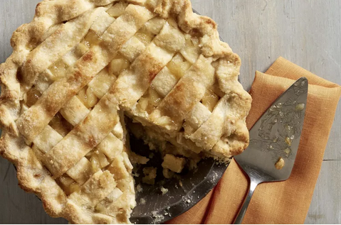

Apple Pie

Description
Simple yet delicious apple pie recipe
Ingredients
- 8 medium-sized granny smith apples
- premade pie crust
- 3 tbps of sugar
- 1 egg
- 1 tbsp of butter
- 2 tsps of cinnamon
Steps
- preheat oven to 450 degrees
- peel and core apples into 1/4in slices
- mix apples, cinnamon, and sugar in a bowl
- layout bottom of pie crust into pie dish
- place apple pie filling into pie dish
- cut butter into pieces and place around pie filling
- layout tope of pie crust over pie filling, seal bottom crust to top crust by pinching it
- seperate egg yolk from white and mix with a tbsp of water
- brush top of pie crust with egg white
- poke 4 small vent holes in pie crust
- bake for 15 minutes at 450 degrees, then reduce heat to 350 degrees and bake for 30 minutes
- cool for 10 minutes before serving